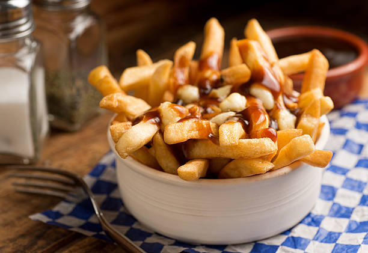

Poutine

Description
Poutine is another favorite of mine. I alone would never have thought adding fried potatoes, gravy, and cheese curds together would create something so beautiful.
This recipe is fairly easy to follow since it only has a few ingredients. This one is great for when you're really drunk and want something really greasy and just terrible for you, but aren't able to drive or even go out in public at all. This makes 4 servings.
Ingredients
- 1 quart vegetable oil for frying
- 1 can or 10.25 ounces of beef gravy
- 5 medium potatoes, cut into fries
- 2 cups cheese curds
Steps
- Heat oil in a deep fryer or deep heavy skillet to 365 degrees F or 185 degrees C
- While the oil is heating, begin to warm gravy.
- Place fries into the hot oil, and cook until light brown, 8 to 10 minutes. Cook fries in batches if necessary to allow them room to move a little in the oil. Remove to a paper towel-lined plate to drain.
- Places fries on a serving platter, and sprinkle the curds over them.
- Ladle warmed gravy oiver the fries and cheese, and serve immediately.